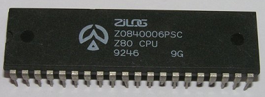
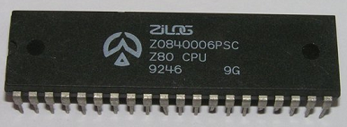

www.spetsialist-mx.ru
САЙТ О ПК "СПЕЦИАЛИСТ" И ЕГО КЛОНАХ
| |
|
| ГЛАВНАЯ | |
| МИКРОПРОЦЕССОР | |
| КОНТРОЛЛЕР НГМД | |
| ПАМЯТЬ | |
| ИНТЕРФЕЙСЫ | |
| КОНТРОЛЛЕР ЦВЕТА | |
| ПРОГРАММЫ | |
| ИГРЫ | |
| СПЕЦИАЛИСТ МХ2 | |
| ПЛИС | |
| ССЫЛКИ | |
| ОБРАТНАЯ СВЯЗЬ |
МИКРОПРОЦЕССОР Z80
 _
_
Архитектура микропроцессора Z80 фирмы ZILOG основывается на архитектурных принципах микропроцессора 8080 и позволяет выполнять все 78 команд этого микропроцессора, а также 80 дополнительных команд. Всего микропроцессор Z80 имеет 696 кодов операций (в отличие от 244 кодов микропроцессора 8080). К числу особенностей микропроцессора Z80 относятся: использование для питания лишь одного источника напряжением +5 В, наличие однофазного внешнего синхрогенератора, 17 внутренних регистров и встроенная схема регенерации ОЗУ.
Логическая организация Z80. В состав Z80 входят: устройство управления, регистр команд, программный счётчик, 24 регистра пользователя и арифметико - логическое устройство. Устройство управления. В Z80 управляющее устройство выдаёт огромное число внутренних управляющих сигналов, а также обеспечивает формирование внешних управляющих сигналов. Регистр команд содержит 8 бит (1 байт). В Z80 имеется большой блок регистров, и пересылка байтов данных к регистрам и от них является простейшей и наиболее важной чертой программирования в машинных кодах. Программный счётчик - это пара регистров, которые используются совместно, поэтому программный счётчик содержит 16 - ти битные значения. Регистры пользователя (основные регистры).
Имеется 24 регистра пользователя. Все регистры однобайтовые, хотя обычно используются парами. В арифметико - логическом устройстве (АЛУ) выполняются арифметические и логические операции. Возможно выполнение сложения и вычитания, а также АЛУ способно выполнять большое количество битовых операций и устанавливать флаги, чтобы показать результат. Схемно - графическое обозначение микропроцессора показано на рисунке.
D0...D7 - трёхстабильная шина данных, по которой осуществляется обмен данными между процессором и памятью, либо между процессором и устройствами ввода - вывода;
A0...A15 - трёхстабильные выходы адресной шины, которые выдают адреса для обмена данными с памятью (64 кБайт максимум) и с устройствами ввода - вывода (65536 каналов максимум);
/М1 - выходной сигнал указывает, что в текущем машинном цикле происходит чтение кода операции из памяти;
/MREQ - выходной сигнал указывает, что на адресной шине установлен адрес для операции чтения памяти или записи в память;
/IORQ - выходной сигнал указывает, что пика адреса содержит адрес внешнего устройства для операции ввода или вывода. Кроме того, сигнал генерируется также совместно с сигналом /M1 в цикле подтверждения прерывания. Тем самым устройству, запросившему прерывание, указывается, что вектор прерывания может быть помещен на шину данных;
/RD - выходной сигнал указывает, что процессор выполняет цикл чтения данных из памяти или устройства ввода - вывода;
/WR - выходной сигнал указывает, что процессор выдает на шину данных данные, предназначенные для записи в адресованную ячейку памяти или устройство вывода;
CLK - входной сигнал предназначен для ввода однофазной тактовой синхронизации;
/RST -входной сигнал имеет самый высокий приоритет и приводит процессор в начальное состояние;
/RFSH - выходной сигнал указывает, что младшие 7 разрядов шины адреса содержат адрес регенерации для динамической памяти и текущий сигнал /MREQ может использоваться для восстановления информации;
/HALT - выходной сигнал указывает, что процессор выполняет команду останова программы и ожидает маскируемое либо немаскируемое прерывание, чтобы завершить эту команду и начать обработку подпрограммы прерывания;
/WAIT - входной сигнал указывает процессор, что адресованная ячейка памяти или устройство ввода - вывода ещё не готово к передаче данных. Ппроцессор генерирует состояние ожидания (холостые такты, в которых не происходит никаких изменений с процессора) до тех пор, пока активен этот сигнал;
/INT - входной сигнал формируемый устройством ввода - вывода, анализируется в конце выполнения текущей команды;
/NMI - входной сигнал, запускаемый отрицательным фронтом. Фронт запуска активизирует внутренний триггер NMI;
/BUSRQ - входной сигнал делает запрос процессора на перевод всех его шин в высокоомное состояние для того, чтобы другие устройства смогли управлять этими шинами. Если активизирован этот сигнал, то процессор переводит шины в высокоомное состояние как только завершён текущий машинный цикл;
/BUSACK - выходной сигнал сообщает запрашивающему устройству, что шины адреса и данных, а также трехстабильные сигналы управления находятся в высокоомном состоянии, и внешнее устройство может ими управлять;
VCC - питание +5 В;
GND - общий провод.
ПОДКЛЮЧЕНИЕ Z80
Для начала, настоятельно рекомендую прочесть реферат, написанный А. В. Шевцовым "Пользователю ПК "Специалист" с CPU Z80". После этого можно начинать переделывать схему под микропроцессор Z80 (если автор реферата не отбил желание это сделать). Ниже приведенны две одинаковые схемы, отличающиеся друг от друга некоторыми деталями.
"Турбирование" микропроцессора Z80 представлено схемой, изображённой ниже. Элемент D4 обеспечивает нормальную работу регистра сдвига К155ИР1 при работе в "Турбо" - режиме. Без этой схемы изображение двоится. Схему на элементе D4 необходимо собрать в первую очередь - на работу регистра К155ИР1 в обычном режиме схема не влияет. Мультиплексор D2 коммутирует сигналы только для формирования сигналов RAS, CAS, WE, CLC. Частота, подаваемая на синхрогенератор (К155ИЕ5, К155ИЕ7) и контроллёр дисковода, не должна изменяться. Эти блоки всегда остаются подключенными к счётчику DD8 (К155ИЕ7) в компьютере. Мультиплексор D2 должен вносить минимальную задержку сигнала (серия К531), триггер D3.1 (RAS) должен иметь достаточную нагрузочную способность (серия К155). D3.1 - формирует новый сигнал RAS (старый нужно отключить). SB1 по схеме - фиксирующая кнопка или тумблер.
Схема не содержит циклов ожидания процессора, поэтому необходима тщательная настройка иначе будет сбоить. Главная причина сбоев - неустойчивая работа ОЗУ, которая зависит от фазы сигнала RAS относительно сигнала CAS. Этот параметр разный для микросхем памяти К565РУ5В, Г, Д и К565РУ7В, Г, Д. А микросхемы К565РУ5Д на частоте 4МГц вообще работают на пределе.
Элементы D1.2, D1.3 обеспечивают задержку. Число инверторов должно быть чётным и подбирается экспериментально - пока не будет устойчивой работы. Если со 155 серией инверторов не получится устойчивой работы, то можно провести эксперименты с более быстрыми сериями инверторов - 555, 531, 530. После некоторых мучений можно добиться нормальной устойчивой работы ПК, но бывает еще так, что в начале (после включения) компьютер работает стабильно, а со временем опять начинает сбоить - здесь хорошо помогает принудительное охлаждение ОЗУ с помощью небольшого кулера. В "Турбо" - режиме возможно начнет плохо читать дискеты контроллер дисковода.
Схема успешно испытана на нескольких ПК "Специалист_МХ", количество инверторов на каждом компьютере приходилось подбирать экспериментально.